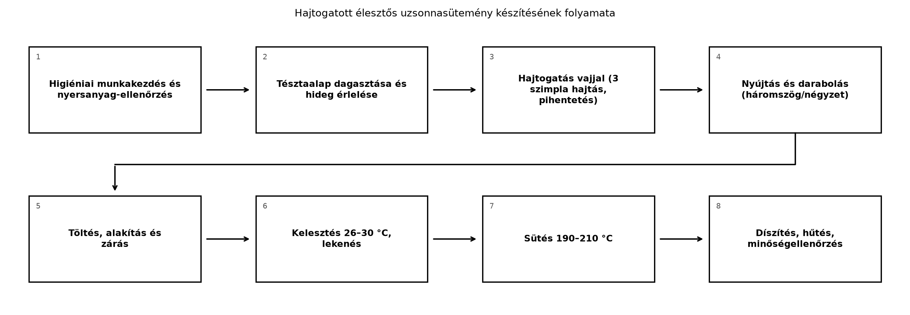

A reggeli nyitás előtt a műhelyben 120 db croissant-nak kell kisülnie. A vendég friss, leveles, vajas illatú terméket vár; a büférendeléshez töltött dán péksüteményt is csomagolni kell. Ha a tészta felmelegszik, a vaj kiolvad a rétegek közül, és a termék tömör, zsíros, lapos lesz. Ha a darabolás pontatlan, a sütemények különböző méretűek lesznek, és a sütőben sem viselkednek egyformán. Ezért ebben az alfejezetben a nyújtás, darabolás, alakítás, kelesztés és sütés hőmérséklet-fegyelmét tanuljuk meg.
Képzeljünk el egy jól sikerült croissant-t. A külseje aranybarna, ropogós; a metszete méhsejtszerű, vékony tészta- és levegőrétegekből áll. A rétegeket a hajtogatás alakítja ki: három szimpla hajtás után a tésztarétegek száma elvileg 28, a zsiradékrétegeké 27, az összes rétegé 55. A sütőben a vajrétegek között lévő víz gőzzé alakul, a gőz feszíti szét a rétegeket. Ehhez a tésztát hidegen kell tartani a formázásig, majd 26–30 °C-on keleszteni, hogy az élesztő dolgozzon, de a vaj ne olvadjon ki. A sütés magas hőmérsékletet, 190–210 °C-ot igényel.
A jól sikerült és a hibás croissant metszetét az alábbi ábra veti össze: a jó termék rétegei méhsejtszerűen nyitottak, a túl meleg tésztával vagy vajjal készült termék bele tömör, kenyérszerű, az alja olajos, az alulkelesztett termék közepe tömör, a rétegek között nagy üreg nyílik.

A folyamatábra mutatja, hogy a hajtogatott tésztából készült uzsonnasütemény nem tűr hosszú szobahőmérsékletű állásokat: a sorrendet a hideg tészta, a gyors alakítás és a szabályozott kelesztés határozza meg.
Definíció. Hajtogatott élesztős uzsonnasütemény: olyan élesztővel lazított, zsiradékrétegekkel hajtogatott, leveles szerkezetű, sütött termék, amelyet reggelire, uzsonnára, büfébe vagy hidegtálra készítünk. Ide tartozik a croissant (francia vajas leveles kifli), a dán péksütemény (danish pastry) és a hajtogatott élesztős, esetleg töltött pogácsafélék.
Szabály. A hajtogatott élesztős tésztát mindig hideg alapanyagokból, hideg műveleti felületen, gyorsan dolgozzuk fel. A hajtogatások között a tésztát 4–8 °C-on pihentetjük. A készre formázott terméket 26–30 °C-on, 70–80 % relatív páratartalom mellett kelesztjük (ellenőrizendő: kelesztő gyártói adatlapja). A sütési hőmérséklet 190–210 °C, a sütési idő 16–22 perc (ellenőrizendő: sütőtípus és darabméret). Minden megadott hőfok és idő tájékoztató érték.
A hajtogatott élesztős tésztát a Hajtogatott élesztős tészták alfejezetben tanult módon készítjük el: rövid dagasztás, hideg érlelés, vaj beburkolása, általában három szimpla hajtás. A kész tésztát a hűtőből közvetlenül felhasználás előtt vesszük ki. A tészta maghőmérséklete ne haladja meg a 14–16 °C-ot a nyújtáskor (ellenőrizendő: üzemi gyakorlat). Ha a tészta felmelegedett, vissza kell hűteni 4–8 °C-ra, mielőtt tovább dolgoznánk.
Higiénia. A munkafelületet, a nyújtófát, a vágóeszközöket és a tepsiket a munka megkezdése előtt tisztára kell mosni és szárítani. A nyers tojást, tejet és vajat hűtve kell tárolni a felhasználásig. A tésztát csak fedett edényben, hűtőben pihentetjük, hogy ne száradjon le, és ne vegye át idegen szagokat.
A hűtött tésztát óvatosan, egyenletes vastagságra nyújtjuk. A croissant-hoz és a dán péksüteményhez a tészta vastagsága általában 3–4 mm. A tésztát a hajtogatás irányában, kis erővel nyújtjuk. Nyújtás közben gyakran fordítsuk, és ha a tészta húzódik, rövid időre tegyük vissza a hűtőbe.
Megjegyzés. A hajtogatott élesztős tészta nem azonos a leveles tésztával: élesztőt is tartalmaz, ezért nyújtás közben a sikérháló rugalmas, a tészta kissé húzódik. A tészta nyújtás utáni pihentetése 10–20 perc a formázás előtt, hogy a darabok ne zsugorodjanak.
A croissant-hoz a kinyújtott tésztát éles késsel vagy pizzavágóval hosszú csíkokra vágjuk, majd a csíkokból egyenlő szárú háromszögeket készítünk. A szokásos háromszög alapja kb. 12 cm, magassága 26–28 cm; 3,5–4 mm vastag tésztánál (a tészta sűrűségét kb. -nek véve) a nyers darab tömege kb. 60–70 g (ellenőrizendő mérlegeléssel). A háromszöget a széles alap felől a csúcs felé tekerjük fel, ügyelve arra, hogy a csúcs a feltekert kifli alá kerüljön. A végeket enyhén befelé hajlítva félhold alakot formázunk.
A dán péksüteményhez leggyakrabban négyzetet vágunk: 10×10 vagy 12×12 cm-es lapokat. A négyzet közepére tölteléket teszünk, majd a sarkokat a középpont felé hajtjuk, vagy két szemben lévő sarkot egymásra hajtunk. A széleket vízzel vagy tojásos lekenővel összeragasztjuk, hogy sütés közben ne nyíljanak szét.
Szabály. A darabolásnál minden darabnak azonos tömegűnek és alakúnak kell lennie, mert különben a sütés és a kelesztés nem egyenletes. A vágóeszköz legyen éles, hogy ne nyomja össze a rétegeket.
A croissant vágását és tekerését, valamint három gyakori dán formát (szélmalom, boríték, csiga) az alábbi képsor mutatja; a töltelék helyét sötét pöttyözött kör jelöli.
A dán péksüteményt hideg, sűrű töltelékkel töltsük. A túl folyós töltelék sütés közben kifolyik. A töltelék mennyisége általában a nyers tészta tömegének 40–50%-a, tehát egy 60 g-os tésztadarabhoz 25–30 g töltelék elegendő. A gyümölcsöt előzetesen lecsepegtetjük, a krémtölteléket hűtve adagoljuk.
A formázás után a darabokat szellősen sütőpapírral bélelt tepsire helyezzük, egymástól 4–5 cm távolságra. A tepsit enyhén vékonyan kenhetjük, de a sütőpapír biztonságosabb, mert a kiolvadt vaj nem éget le.
A formázott termékeket 26–30 °C-on kelesztjük 45–75 percig (ellenőrizendő: tésztaállag és kelesztő). A magasabb hőmérséklet kiolvasztaná a vajat; a rétegek összeragadnának. A kelesztőben a levegő nedvességtartalma fontos, mert a száraz bőr megakadályozza a kelést. A készre kelt termék térfogata kb. 1,5–2-szeresére nő, de a réteges szerkezetnek még láthatónak kell maradnia.
Kritikus pont. A kelesztés alatt a hőmérséklet és az idő együttesen hat a mikrobaszaporodásra. A tojásos, tejes tészta és töltelék miatt kerüljük a 30 °C feletti, órákon át tartó melegentartást. A kelesztő hőmérsékletét naplózzuk. Ha a tészta felülete zsírosan fénylik, vagy a vaj kifolyik, a tételt hűtőbe kell tenni, és gyorsan átdolgozni, vagy ha a minősége már nem menthető, selejtezni.
A kelesztés után a termékeket vékonyan lekenjük tojásos keverékkel (1 tojás + 10 g tej). A lekenés csak a felső felületet érje, a vágott oldalakat ne kenjük, mert a tojás ott összeragasztaná a rétegeket, és a termék nem tud szétnyílni.
A sütőt előmelegítjük 190–210 °C-ra. Az első 10 percben ne nyissuk ki a sütő ajtaját, mert a gőz és a hőmérséklet csökkenése miatt a rétegek összeesnek. A sütési idő 16–22 perc, amíg a termék aranybarna, a rétegek széle elvált, a tészta belső hőmérséklete legalább 90–95 °C (ellenőrizendő: sütőtípus és darabméret). A sütés után a termékeket rácsra téve hagyjuk gőzölni, hogy az aljuk ne puhuljon fel.
A hajtogatott élesztős uzsonnasüteményeket melegen, sütés után forró cukorsziruppal (50–60%-os) átkenhetjük. Ez fényes, puha, enyhén nedves felületet ad, és késlelteti a száradást. A fondános bevonathoz a Fondán melegítése, hígítása és felhasználása bevonásra alfejezetben tanult módon 35–40 °C-ra melegített, hígított fondánt használunk; a fondánt vékonyan, csíkokban vagy teljes bevonatként alkalmazzuk. A tetejére sütés előtt tojásos lekenés után, vagy sütés után szirupra szórhatunk szeletelt mandulát, diót, mákot. Az olajos magokra vonatkozó allergénszabályokat mindig vegyük figyelembe, és a közös eszközökkel okozott keresztszennyeződést kerüljük.
Számítás. 1. példa: rétegszám-számítás.
Adott: 3 szimpla hajtás.
Keresett: tésztarétegek száma , zsiradékrétegek száma , összes réteg .
Képlet: Kiindulás a vajbeburkolás: tészta–vaj–tészta, vagyis egy zsiradékréteg (). Minden szimpla (hármas) hajtás a zsiradékrétegek számát megháromszorozza, a hajtásélen egymásra kerülő tésztarétegek pedig összeolvadnak, ezért
Behelyettesítés:
Ellenőrzés lépésenként: tészta–vaj–tészta (2 tészta, 1 vaj) → 1. hajtás után 4 tészta, 3 vaj → 2. hajtás után 10 tészta, 9 vaj → 3. hajtás után 28 tészta, 27 vaj, összesen 55 réteg. A gyakorlatban a vajrétegek egy része a nyújtás során összeolvad vagy elvékonyodik, ezért a látható rétegszám kisebb lehet, de a nagyságrend helyes. ∎
A szimpla (hármas) hajtás hatását a rétegszámra az alábbi ábra mutatja: minden hajtásnál a köteg három példánya kerül egymásra, és a hajtásél mentén két-két tésztaréteg egybeolvad, ezért három hajtás után 27 vajréteg és 28 tésztaréteg (összesen 55 réteg) van (, ). A HTML-kiadásban a hajtás lépésenként (harmadolás, egymásra hajtás, kinyújtás) lejátszható.
Számítás. 2. példa: sütési veszteség és nettó tömeg.
Adott: 20 db dán péksütemény, nyers tésztadarab 60 g/db, sütési veszteség 18%.
Keresett: sütött darab tömege és az összes sütött tömeg.
Képlet:
Behelyettesítés:
Összes sütött tömeg:
Ellenőrzés: a 20 db nyers tészta összes tömege . A veszteség 1200 g 18%-a = 216 g; 1200 − 216 = 984 g. Az eredmény egyezik. ∎
Jogszabály. A hajtogatott élesztős uzsonnasütemények a cukrászati és sütőipari termékek körébe tartoznak; megnevezésüknek és összetételüknek a Magyar Élelmiszerkönyv vonatkozó előírásait és irányelveit kell követniük (ellenőrizendő: aktuális előírásszám). A gyártás és forgalmazás során a 852/2004/EK rendelet (élelmiszer-higiénia) HACCP-alapú eljárásait, a 1169/2011/EU rendelet (fogyasztók tájékoztatása) allergénjelölési szabályait kell alkalmazni. A késztermék tömegét és a feltüntetett nettó mennyiséget a fogyasztóvédelmi előírások szerint kell ellenőrizni. A tárolási hőmérsékletek és a fogyaszthatósági idők üzemi HACCP-terven alapulnak; a pontos értékeket a hatályos útmutatók és a gyártói adatlapok rögzítik (ellenőrizendő: NÉBIH-útmutató és gyártói adatlap).
Cél. Készíts el 20 db hajtogatott élesztős dán péksüteményt, és gyakorold a croissant háromszög-darabolását is.
Eszközök és anyagok. Mérleg, hűtő, dagasztógép vagy kézi dagasztó, nyújtófa, márványlap vagy hűthető felület, éles kés/pizzavágó, sütőpapír, tepsi, ecset, sütő, rács, hűtött töltelék, hőmérő.
Higiéniai munkakezdés. Munkaruha, hajháló, ékszer le, kézmosás; tiszta munkafelület és eszközök; nyersanyagok ellenőrzése (minőség, szavatosság, hőmérséklet); tojásos, tejes anyagok hűtve tárolása.
Biztonsági korlát. A dagasztógépet, tésztanyújtót csak oktatás után, felügyelet mellett használd. A gép védőburkolatát tilos kiiktatni; tisztítás előtt áramtalaníts és várd meg a leállást. Forró sütő, sütőlemez és forró cukorszirup esetén hosszú ujjú, hőálló kesztyűt használj. A forró szirup fröccsenése égési sérülést okozhat.
Technológiai lap. Hajtogatott élesztős dán péksütemény (20 db, nyers tészta 60 g/db, töltelék 30–35 g/db)
A tanulási recept a szakmában elterjedt hajtogatott élesztős tészta arányait követi; a pontos eredeti arány nem jogi előírás, az üzemi receptúrák eltérhetnek.
| Nyersanyag | Mennyiség (g) | Megjegyzés |
|---|---|---|
| BL55 finomliszt | 500 | sütőipari liszt |
| Tej (3,5%) | 240 | hideg, 4–8 °C |
| Tojássárgája | 40 | kb. 2 db közepes tojásból |
| Kristálycukor | 60 | |
| Vaj a tésztaalapba | 60 | hideg, kockázva |
| Friss élesztő | 25 | szárított élesztő esetén kb. harmada |
| Só | 8 | finom asztali só |
| Tésztaalap összesen | 933 | |
| Hajtogató vaj | 250 | 12–16 °C, formázható |
| Hajtogatott tészta összesen | 1183 | kb. 20 db 60 g/db |
| Főzött sárgakrém | 500 | a Tojáskrémek I: főzött sárgakrém és vaníliakrém szerint, hűtött |
| Áfonya/erdei gyümölcs | 150 | kiolvasztva, lecsepegtetve |
| Töltelék összesen | 650 | 32,5 g/db |
| Tojás a lekenéshez | 30 | kb. fél–kétharmad tojás, felverve |
| Tej a lekenéshez | 10 | a tojással keverve |
Díszítéshez: hígított fondán 100 g, szeletelt mandula 40 g.
Kritikus pontok. A főzött sárgakrém tölteléket 2 órán belül 5 °C alá kell hűteni (ellenőrizendő: hatályos útmutató). A kelesztés hőmérsékletét és idejét naplózd. A sütött termék belső hőmérséklete érje el a 90–95 °C-ot (ellenőrizendő: sütőtípus). A kész, krémes töltelékű terméket hűtve, lefedve, 5 °C alatt tárold, és a HACCP-terv szerinti időn belül értékesítsd (ellenőrizendő: üzemi terv).
Allergének. A termék glutént (búzaliszt), tojást, tejet és dióféléket (mandula) tartalmaz. A keresztszennyeződés kockázata különösen az olajos magvas por és a közös ecset/kés esetén magas; az allergénmentes termékekhez külön eszközöket és jelölést használj.
Minőségi jellemzők. Formája szabályos, egyenletes; tömege töltelékkel kb. 75–85 g/db sütve (tészta kb. 49 g + töltelék; ellenőrizendő mérlegeléssel); felülete aranybarna, levelesen elvált; metszete réteges, a belső nem nyers; tölteléke eloszlik, íze vajas-élesztős, enyhén édes-sós; illata friss vajas, karamelles.
Tárolás, eltarthatóság. A krémes töltelékű dán péksüteményt hűtve, 5 °C alatt, lefedve tárold, és aznap fogyaszd. A töltetlen croissant-t szobahőmérsékleten, légmentes dobozban 1 napig tárold (ellenőrizendő: üzemi gyakorlat). A nyers, formázott, kelesztés nélküli tészta fagyasztható; a kiolvasztást hűtőben, lassan végezd (ellenőrizendő: gyártói útmutató).
A termékeket sütés után vizuálisan és kézzel ellenőrizzük. A forma legyen szabályos, a méret és tömeg egyenletes. A felület legyen aranybarna, ne sápadt, ne égett, és a rétegek széle váljon el. A metszeten a rétegek vékonyak, egyenletesek legyenek; a belső tészta ne legyen nyers, tömör, zsíros. Az íz legyen harmonikus, friss vajas, az élesztő ne érződjön túl erősen; a töltelék ne legyen folyós vagy csomós. Az illatban ne legyen savanyú, erjedt szag. A tömegellenőrzéshez mérj le legalább 3–5 darabot tételenként, és ellenőrizd a technológiai lap szerinti nettó tömeget.
Tünet: a sütés közben kifolyik a vaj, a termék zsírosan fénylik. Ok: túl meleg tészta, meleg műhely, elégtelen pihentetés, túl erős nyújtás. Megelőzés: hideg alapanyagok, 4–8 °C pihentetés, gyors munka. Javítás: ha nyers állapotban észleljük, hűtsük vissza; ha kisült és zsíros, a tételt minőségileg értékeljük, selejtezhetjük.
Tünet: a croissant nem leveles, a metszet tömör. Ok: kevés hajtás, a vajrétegek összeolvadtak, vagy a tészta túl vastag volt. Megelőzés: legalább három szimpla hajtás, 3–4 mm vastagság, hűtés.
Tünet: a termék kívül megég, belül nyers marad. Ok: túl magas sütési hőmérséklet, túl nagy darabok, sütőajtó gyakori nyitogatása. Megelőzés: 190–210 °C, egyenletes darabméret, a sütőajtó zárva tartása az első 10 percben.
Tünet: a töltelék kifolyik. Ok: túl sok, túl folyós, vagy a szélek nincsenek jól zárva. Megelőzés: sűrű, hűtött krém, 30–35 g/db adag, ragasztott szélek.
Egy cukrászüzem péntek reggelre 160 db dán péksüteményt vállal. A műhely hőmérséklete nyáron 28 °C. A tanuló a harmadik hajtás után a tésztát 30 percig a konyhapulton hagyja, mert más feladatot végez. A tészta felmelegszik, a vaj kifolyik, és a tepsikre helyezett darabok kelesztés közben szétfolynak. A művezető megállítja a folyamatot: a tételt hűtőbe teszik, a legjobban megsérült darabokat selejtezik. A megoldás: a munkafolyamatot kisebb adagokra bontják, a hajtogatott tésztát mindig fedve, hűtőben tartják, és a kelesztő hőmérsékletét 26 °C-ra állítják. A tanulság: a hajtogatott élesztős tészta hőmérséklet-fegyelem nélkül nem ad leveles terméket; a hűtési lépések nem hagyhatók ki.
1. feladat (A). Írd le, mi a különbség a croissant és a dán péksütemény darabolása között.
2. feladat (A). Számold ki, hány darab 65 g-os croissant-t formázhatsz 2,6 kg hajtogatott tésztából, ha a nyújtási és darabolási veszteség 5%.
3. feladat (B). Egy üzem 35 db dán péksüteményt süt. A sütött darab nettó tömege 52 g, a sütési veszteség 18%. Mennyi nyers tésztát kell kimérni a tételhez?
4. feladat (B). A dán péksütemény tölteléke 28 g/db. A töltelék adagolási vesztesége 10%. Mennyi bruttó tölteléket kell előkészíteni 25 db-hoz?
5. feladat (C). A tanuló a kelesztőt 38 °C-ra állítja, mert „gyorsabban megkel a tészta”. Milyen hibát okozhat, milyen jeleit figyeled meg, és hogyan javítod a munkafolyamatot?
6. feladat (D). Készíts el 16 db vajas croissant-t a gyakorlati útmutató alapján, és töltsd ki a technológiai lapot. Mérd és értékeld a sütött termékek tömegét, színét és metszetét. A kész lapot a Uzsonnasütemények anyaghányad-számítása és technológiai lapja alfejezetben fogjuk összesíteni.
Önellenőrzés – válaszok
1. feladat megoldása. A croissant-hoz a kinyújtott tésztát háromszögekre vágjuk, és az alap felől a csúcs felé feltekerjük, majd félholddá hajlítjuk. A dán péksüteményhez leggyakrabban négyzetet vágunk, közepére tölteléket teszünk, és a sarkokat középre hajtva/zárva alakítjuk.
2. feladat megoldása.
Adott: tészta 2,6 kg = 2600 g; darab 65 g; veszteség 5%.
Keresett: formázható darabszám .
A veszteség után formázásra felhasználható tömeg:
Darabszám:
Ellenőrzés: , a kerekítés miatt a maradék 0. ∎
3. feladat megoldása.
Adott: 35 db; sütött darab 52 g; sütési veszteség 18%.
Keresett: nyers tészta össztömege.
Nyers darab tömege:
Összes nyers tészta:
Ellenőrzés: 2219 g nyers, 18% veszteség, sütött tömeg 2219 × 0,82 ≈ 1820 g; 35 × 52 = 1820 g. Egyezik. ∎
4. feladat megoldása.
Adott: 25 db; 28 g/db töltelék; adagolási veszteség 10%.
Keresett: bruttó töltelék tömege.
Nettó töltelék:
Bruttó:
Ellenőrzés: 778 g-ból 10% veszteség = 77,8 g; marad 700,2 g. ∎
5. feladat megoldása. A 38 °C-os kelesztőben a vaj kiolvad, a rétegek összeragadnak, a termék sütés után tömör, zsíros, lapos lesz; a kelesztő alján vajtól fényes tócsákat láthatsz. A javítás: azonnal állítsd a kelesztőt 26–30 °C-ra, a felmelegedett tételt tedd hűtőbe 10–15 percre, és ha a vaj már kifolyt, dolgozd át vagy selejtezd. A megelőzés: a kelesztő hőmérsékletét a műszak elején ellenőrizd és naplózd.
6. feladat megoldása. A gyakorlati feladat értékelési szempontjai: a technológiai lap teljes kitöltése, a higiéniai munkakezdés betartása, a tészta hőmérsékletének betartása, a darabok tömegének egyenletessége (60–70 g nyers), a sütött termék színe és metszete (aranybarna, leveles, belső nem nyers), a mért tömeg eltérése a lapon megadott nettó tömegtől kisebb legyen, mint ±5%. A várt eredmény: 16 db arányos, leveles croissant, a tömegük 45–55 g/db, a kóstolásnál friss vajas-élesztős íz.
A hajtogatott élesztős uzsonnasütemények a biológiai és mechanikai lazítás együttesén alapulnak. A tésztát hidegen, 4–8 °C-on pihentetjük; a vajrétegek megőrzése érdekében a műveleti hőmérséklet soha ne haladja meg a 14–16 °C-ot a nyújtásnál. A croissant-t háromszögekből tekerjük, a dán péksüteményt négyzetből, töltve, sarkait középre hajtva alakítjuk. A formázott darabokat 26–30 °C-on kelesztjük 45–75 percig, majd csak a felső felületet kenjük tojással, és 190–210 °C-on sütjük 16–22 percig (ellenőrizendő: sütőtípus). A sütési veszteség jellemzően 15–20%, a töltelék adagja a nyers darab tömegének 40–50%-a. A krémes, tojásos, tejes termékek hűtött tárolást igényelnek. Továbbvitt eredmény. A technológiai lap, a veszteségszámítás, az allergénlista és a minőségi jellemzők az Uzsonnasütemények anyaghányad-számítása és technológiai lapja alfejezetben kerülnek összegzésre, ahol a teljes uzsonnasütemény-választékra végezzük el az anyaghányad-számítást és a HACCP-ellenőrzést.